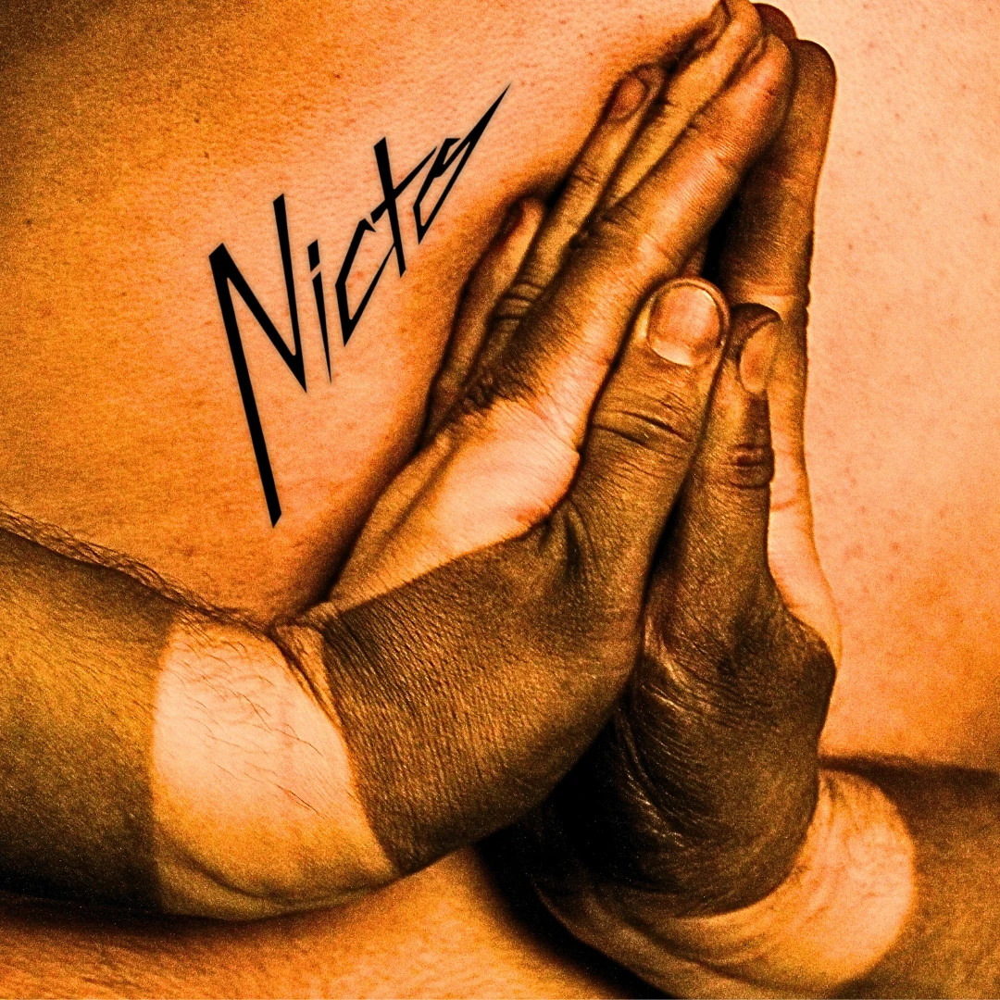
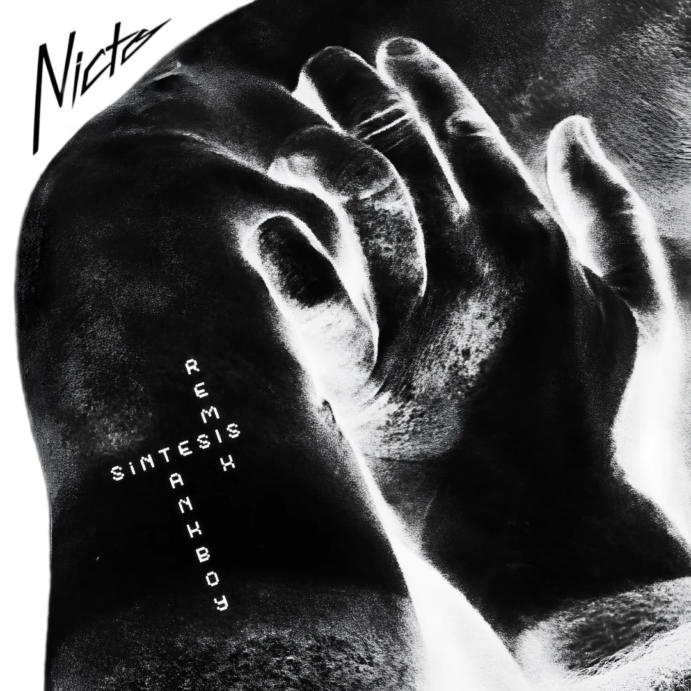

Síntesis
Sencillo debut de NICTO, publicado en mayo de 2026.
Dos lanzamientos, disponibles en todas las plataformas.

Sencillo debut de NICTO, publicado en mayo de 2026.

Remix en colaboración con Tankboy, músico y productor de proyectos como Alondra Noctvurna Aeon Vex. Publicado en septiembre de 2026.
Dos formatos: un show para ver y un set para bailar.
20 a 40 minutos
Presentación performática, bailable e intensa, pensada para espacios nocturnos con proyecciones e iluminación inmersiva.
1 a 2 horas
Un recorrido por el electropop, lo oscuro, lo queer y el eurodance, hecho para la pista, con temas propios entre medio.
La variante de «Una noche electropop»: NICTO mezcla y además canta en vivo sus propios temas.
En la cabina suenan, entre otros, Robyn, Kylie Minogue, Madonna, Depeche Mode, New Order y Hercules & Love Affair.
NICTO es un proyecto musical y performático independiente de Chile, desarrollado desde 2020. Combina composición electrónica, sintetizadores y bases rítmicas con una puesta en escena pensada para el cuerpo, el baile y el estado catártico.
Desde 2024 piensa su presentación en vivo con el escenario como espacio ritual para contar historias: el concierto como algo más que una sucesión de canciones.
Las imágenes de abajo son referencias conceptuales del alma del proyecto. Tócalas para verlas en negativo.
Todavía no hay publicaciones sobre NICTO.
Incluye el logo en negro y en blanco, las dos portadas y una biografía corta.
Para fechas, programación de fiestas y proyectos audiovisuales.
Booking(actualizar)
NICTO, 2026